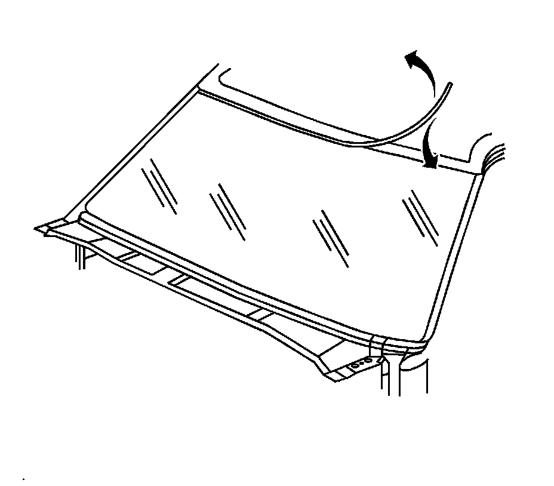
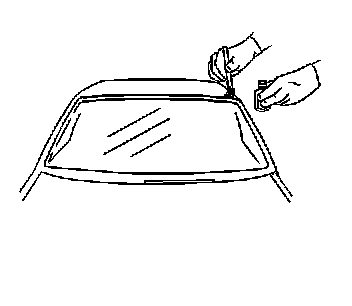
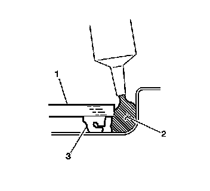

Stationary Window Reveal Molding Repair
STATIONARY WINDOW REVEAL MOLDING REPAIR
REMOVAL PROCEDURE
1. CAUTION: Refer to Glass and Sheet Metal Handling Caution.
IMPORTANT: The window reveal molding fills the cavity between the body and window. If the reveal molding is stretched or damaged, it cannot be reused and it must be replaced.

Lift up on the loose area of the reveal molding.
2. Clean the top edge of the window surface and the reveal molding with a 50/50 mixture of isopropyl alcohol and water by volume on a dampened lint-free cloth.
INSTALLATION PROCEDURE
1. CAUTION: Refer to Window Retention Caution.
Verify all primers and urethane adhesive are within expiration dates.
2. IMPORTANT: Use care when applying the prep, clear #1, to the window. This primer dries almost instantly, and may stain the viewing area of the window if not applied evenly.

Use a new dauber in order to apply glass prep, clear #1, to the channel area approximately 13 mm (1/2 in) to the upper edge of the window.
3. Wipe the glass primed area immediately with a clean lint-free cloth.
4. Shake the glass primer, black #2, for at least 1 minute.
5. Use a new dauber in order to apply glass primer, black #2, to the top edge of the window.

6. Apply a small bead of urethane adhesive (2) between the window (1) and the pinch-weld.
7. Reinstall the window reveal molding.
1. Start from the loose area and hand-press the reveal molding into place over the edge of the window.
2. Run warm water over the reveal molding in order to speed the setup time of the urethane adhesive.
3. Tape should be applied in order to retain the reveal molding to the window. This will maintain a flush fit with the body.
4. The tape is to be removed after 6 hours.